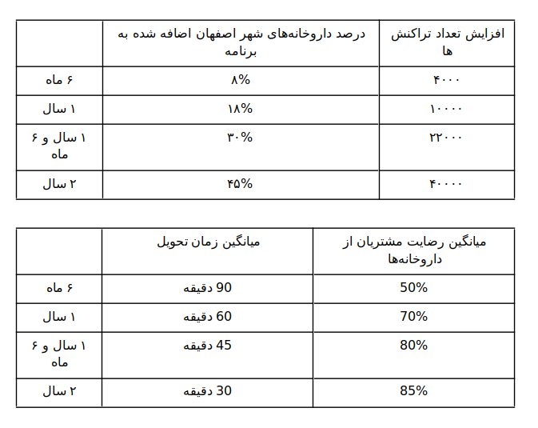
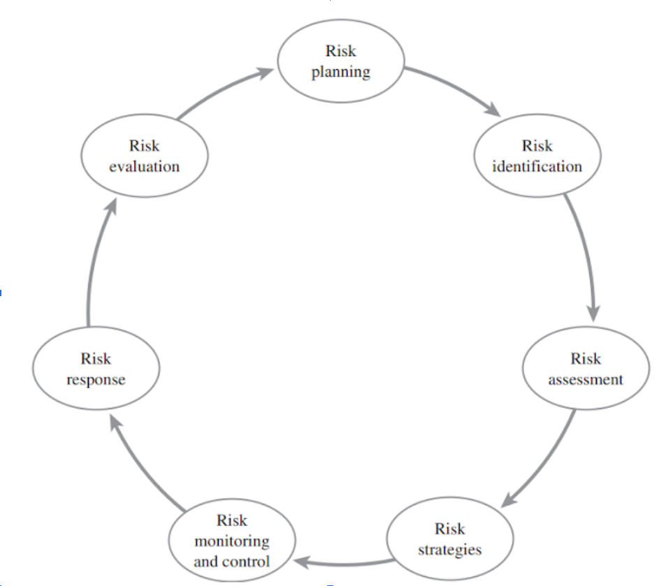

Intech Team
Based at Isfahan University of Technology
تیم اینتِک
سند مدیریت ریسک پروژه
:توصیف پروژه
این پروژه بستری برای ایجاد ارتباط بین مراکز توزیع دارو و مکمل های غذایی و ورزشی در سطح شهر اصفهان ایجاد میکند. ما اپلیکیشن تحت وبی ارائه میکنیم که اشخاص بتوانند از طریق آن دارو های مورد نیاز خود در نزدیک ترین فروشگاه یا داروخانه را مشاهده کرده و سفارش دهند و همچنین با بیشترین سرعت در درب منزل دریافت کنند.
بسیاری از شهروندان در هنگام نیاز به دارو احتیاج به دسترسی به آن در اسرع وقت دارند. عموما داروخانه ها در مناطق شلوغ شهری قرار دارند. این برنامه به مشتریان این امکان را میدهد که نسخه یا داروی مورد نیاز خود را در سایت ثبت کنند و این درخواست برای تمام داروخانههای سطح شهر اصفهان که در پلتفرم ما هستند فرستاده میشود و در صورتی که یکی از داروخانهها این درخواست را قبول کرد کاربر میتواند انتخاب کند که دارو برای او ارسال شود یا خود حضورا اقدام به دریافت دارو نماید بنابر این دسترسی به داروها از طریق دریافت سریع درب منزل ایده ای نو و پرطرفدار تلقی میشود. بعلاوه، اکثر مکمل های غذایی در حال حاضر بدون مجوز قانونی توزیع میشود. پلتفرم ما میتواند بستری قانونی و مورد اعتماد برای توزیع این کالاها فراهم کند.
یکی از اهداف اصلی ما دسترسی سریع به دارو است در نتیجه اقدامات مختلفی در این جهت در این وبسایت صورت میپذیرد. یکی از این اقدامات استفاده از یادگیری ماشین در خواندن نسخه های دستی و تبدیل آن به متن است چرا که دارخانه ها بتوانند سریعتر درخواست ارسالی را بررسی کنند و در صورت وجود همه دارو ها درخواست را قبول کنند.
یکی دیگر از اقدامات در جهت بهبود سرعت اضافه کردن کاربران Vip است به این صورت که کاربران عادی با پرداخت هزینه ای به صورت ماهانه به کاربران Vip ملحق میشوند و در این صورت تضمین میشود که داروهای مورد درخواست آنها در صورت وجود در داروخانهها بلافاصله ارسال خواهد شد و داروها در اصرع وقت به دست آنها میرسد. برای رسیدن به این هدف داروخانه مبلغ سود بیشتری نسبت به حالت عادی دریافت میکند تا که سیاستی باشد که داروخانه ها نیز در این امر ما را یاری کنند. و افراد حامل دارو در صورتی که در کل ماه میانگین زمان رساندن دارو به مقصد توسط آنها کمتر از عدد مشخصی باشد به نسبت سود بیشتری دریافت خواهند کرد.
مشتریان پس از دریافت دارو میتوانند مشاهده کنند که توسط کدام دارخانه دارو ارسال شده و به آن امتیاز دهی کنند داروخانههایی که در آخر ماه امتیاز کمی دریافت کرده باشند مورد بررسی قرار میگیرند و در صورت وجود مشکل از پلتفرم حذف میشوند.
یکی دیگر از اقدامات این است که برای داروخانهها در صورت موافقت خود داروخانه علاوه بر پنل در سایت یک سیستم انبار داری ارائه میشود که با استفاده از آن بتواند انبار دارو خود را کنترل کند مزیتی که اینکار به ما میدهد این است که در حین اینکه داروخانه دار نیاز خود را با این نرم افزار برطرف میکند ما میتوانیم لیستی از داروهای موجود او داشته باشیم و درصورتی که داروهای مورد نیاز مشتری در آن داروخانه وجود داشت دیگر بدون نیاز به ارسال درخواست به داروخانه و منتظر ماندن برای قبول کردن آنها مستقیم درخواست را مستقیم به داروخانه اختصاص دهیم.
ارزش سازمانی قابل اندازه گیری (آسا):
حوزههای اثرگذاری پروژه: اجتماعی بالاخص سلامت و مشتری
ارزش مورد نظر پروژه: افزایش سرعت و کیفیت سرویس دهی به مشتریان و همچنین افزایش سهم در بازار
سنجهها: تعداد تراکنشها ، درصد داروخانه های عضو در اپلیکیشن در شهر اصفهان، میانگین میزان رضایت مشتریان از داروخانهها، میانگین زمان دریافت دارو توسط مشتریان پس از ثبت درخواست
بازه زمانی: بازههای ۶ ماهه
آسا:
۱- رسیدن به ۴۰۰۰ هزار تراکنش در ۶ ماه اول کار برنامه
۲- همکاری با ۲۰٪ از داروخانههای شهر اصفهان در ۶ ماه اول کار برنامه
3- میانگین زمان تحویل دارو کمتر از 2 ساعت در ۶ ماه اول کار برنامه
4- میانگین رضایت 50 درصدی در در ۶ ماه اول کار برنامه
در این بخش به تحلیل ریسک های ممکن برای این پروژه با توجه به قسمت IT PROJECT RISK MANAGEMENT PLANNING PROCESS در کتاب میپردازیم.
شناسایی ریسک های پروژه IT:
ریسک ها با تفکیک در حلقه اول:
1. عدم توانایی کارفرما در مشخص کردن دقیق محدوده و نیازها (فاز conceptualize and initialize)
2. بوجود آمدن اختلاف بین ذی نفعان (فاز conceptualize and initialize)
3. عدم موفقیت در کسب مجوز های لازم (فاز develop project plan and charter)
4. رفتن یکی از اعضای مرکزی تیم (فاز excecute and control)
5. عدم رضایت کارفرما از فیچر های پیاده سازی شده (فاز close project)
6. عدم استفاده از روش های software testing مناسب و نیافتن bug های امنیتی سیستم (فاز execute and control)
7. کمبود وقت برای documentation درس آموخته ها (فاز evaluate project success)
به تحلیل ریسک های مهمتر که ریسک ۱و ۳و ۴و ۵و ۷ هستند میپردازیم
ریسک ها با تفکیک در حلقه دوم:
همه ی ریسک های ذکر شده known-unknown هستند زیرا از امکان وقوع آنها آگاه هستیم اما از ابعاد و کمیت آنها اطلاع دقیقی نداریم.
ریسک ها با تفکیک در حلقه سوم:
موارد ۴ و ۷ از ریسک های داخلی هستند و موارد ۱،۳و۴ از ریسک های خارجی به شمار میروند.
ریسک ها با تفکیک در حلقه چهارم:
ریسک شماره ۱ فرایندها، محصول و افراد را تحت الشعاع قرار می دهد.
ریسک شماره ۳ از لحاظ قانونی، فرایند را تحت تاثیر قرار می دهد.
ریسک شماره ۴ بر روی افراد و سازمان اثر دارد.
ریسک شماره ۵ محصول و افراد را تحت تاثیر قرار می دهد.
ریسک شماره ۷ بر فرایند و سازمان اثر گذار است.
ریسک ها با تفکیک در حلقه پنجم:
ریسک شماره ۱ بر روی محدوده اثر میگذارد.
ریسک شماره ۳ بر روی محدوده و برنامه اثر میگذارد.
ریسک شماره ۴ بر روی بودجه و برنامه اثر میگذارد.
ریسک شماره ۵ بر روی برنامه اثر میگذارد.
ریسک شماره ۷ بر روی کیفیت اثر میگذارد.
مسیولیت ریسک های ۱ و ۴ بر عهده علی آهنگرپور، ریسک ۳ و ۷ بر عهده نیلوفر سعیدی، و ۵ بر عهده حسن کبیریان است.
استراتژی مدیریت ریسک ها:
ریسک شماره ۱: enhancement:
با assign کردن یکی از افراد برای آموزش و روشن کردن روش تعیین محدوده به مشتری میتوانیم تا حد خوبی اثرات ناشی از این ریسک را کاهش دهیم.
ریسک شماره ۳: sharing of ownership:
باتوجه به چالش های وسیع در این حوضه،میتوانیم با یکی از سازمانها یا افراد صاحب تجربه و اعتبار برای تسهیل کسب مجوز های لازم همکاری و یا شراکت کنیم.
ریسک شماره ۴: enhancement
با در نظر گرفتن نیروی جایگزین و اطلاع به بالا دستی ها برای این منظور، اثرات ناشی از وقوع این ریسک مثل عقب افتادن از برنامه تسهیل میشوند.
ریسک شماره ۵: enhancement:
با شفاف سازی و اطلاع رسانی پیوسته به کارفرما درمورد پیشرفت فنی پروژه و مشورت درمورد جزيیات میتوان تا حد خوبی از وقوع این ریسک جلوگیری کرد.
ریسک شماره ۷: enhancement
با تنظیم مقداری از بودجه و برنامه به صورت fixed میتوان از وقوع این ریسک جلوگیری کرد.